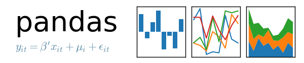

ApacheCN 中文开源组织
组织介绍
- 【主页】 apachecn.org
- 【Github】@ApacheCN
- 暂时下线: 社区
- 暂时下线: cwiki 知识库
- 自媒体平台
- 我们不是 Apache 的官方组织/机构/团体，只是 Apache 技术栈（以及 AI）的爱好者！
- 合作or侵权，请联系【fonttian】fonttian@gmail.com | 请抄送一份到 apachecn@163.com
活动
学习活动
| 活动名称 | 活动描述 |
|---|---|
| ML 读书会 | 机器学习入门 - 读书会 |
| DL 读书会 | 深度学习入门 - 读书会 |
| NLP 读书会 | 自然语言处理 - 读书会 |
| Kaggle - 数字识别 | Kaggle 入门比赛 |
| Kaggle - 泰坦尼克号 | Kaggle 初级比赛 |
| Kaggle - 房价预测 | Kaggle 初级比赛 |
| LeetCode 面试 | LeetCode 面试必备 |
正在进行
【读书会】深度学习 TensorFlow - 第1期
【翻译征集】
【翻译征集】: https://github.com/apachecn/home/issues/59
【学习咨询】: http://www.apachecn.org/map
更新时间: 2019-01-22[项目从近到远]
- 1.【点击参与】Pytorch 1.0 开车翻译了！ <= 坐等装逼的你！ 中领取任务
- 在 issues 中领取任务
- 2.【点击参与】面向数据科学的概率论
- 在 issues 中领取任务
- 3.【点击参与】Airflow 中文文档
- 在 issues 中领取任务
- 4.【点击参与】statsmodels 中文文档
- 在 issues 中领取任务
已经结束
- 【点击参与】北京2期: 线下一日游
- 【点击参与】kg - 第1期: 知识图谱
- 【点击参与】nlp - 第2期: Python自然语言处理
招募完成
谢谢各位，招募成员已经完成，首页上周统一公布
翻译资源
Java 基础
Java Web 和大数据
- Spark 中文文档
- Storm 中文文档
- Kafka 中文文档
- Flink 中文文档
- Beam 中文文档
- Zeppelin 0.7.2 中文文档
- Elasticsearch 5.4 中文文档
- Kibana 5.2 中文文档
- Kudu 1.4.0 中文文档
- Spring Boot 1.5.2 中文文档
- Airflow 中文文档
区块链
数学笔记
Python 数据科学
| NumPy 中文文档 | Pandas 中文文档 | Matplotlib 中文文档 |
|  |
- UCB Data8 课本：计算与推断思维
- UCB Prob140 课本：面向数据科学的概率论
- UCB DS100 课本：数据科学的原理与技巧
- 利用 Python 进行数据分析 · 第 2 版
- Quant Wiki
- fast.ai 数值线性代数讲义 v2
- Pandas Cookbook 带注释源码
- statsmodels 中文文档
- 数据科学 IPython 笔记本
CS 教程
- LeetCode 中文文档
- GeeksForGeeks 翻译计划
- UCB CS61a 课本：SICP Python 描述
- UCB CS61b 课本：Java 中的数据结构
- 数据结构思维
- 中国大学 MOOC 计算机操作系统笔记
- 简单数据结构实现
AI 教程
- AILearning - 机器学习实战
- Sklearn 与 TensorFlow 机器学习实用指南
- 面向机器学习的特征工程
- Python 数据分析与挖掘实战（带注释源码）
- SciPyCon 2018 Sklearn 教程
- TensorFlow 学习指南
- fast.ai 机器学习和深度学习中文笔记
- HackCV 网站文章翻译
- 台湾大学林轩田机器学习笔记
- Scikit-learn 秘籍
- 写给人类的机器学习
- 数据科学和人工智能技术笔记
AI 文档
AI 比赛
其它
社交需求
issues 信息汇总：大数据、区块链、机器学习、深度学习、自然语言处理
个人交友
- 此栏目为个人交友的介绍：个人介绍、交友需求、等着py （请直接通过 issues）
- 为了防止骗炮: 配上自己的GitHub地址(如果对方没有GitHub地址，建议拒绝聊天)
个人求职
此栏目为个人求职的介绍：个人简历、项目描述 等等（请直接通过 issues）
企业招聘
此栏目为企业招聘的介绍：企业介绍、项目要求、技能特招 等等（请直接通过 issues）
交流方式
| 时间 | 群名称 | 群号 | 群人数 |
|---|---|---|---|
| 2018-11-21 | 量化分析 | 91380460 | 500 |
| 2018-10-16 | 深度学习 | 780658835 | 1000 |
| 2018-06-26 | LeetCode 刷题 | 812791932 | 1000 |
| 2018-05-02 | 大数据-2 | 152622464 | 2000 |
| 2017-11-29 | Kaggle | 686932392 | 2000 |
| 2017-09-01 | 机器学习 | 629470233 | 5000 |
| 2014-04-12 | 大数据-1(满) | 214293307 | 2000 |
Github 组织账号只允许贡献者加入。
组织口号: 不装逼的朋友，我们都不想认识 。。。
组织成员
【2018-07-19】第一届 组织委员会
协议
以各项目协议为准。
ApacheCN 账号下没有协议的项目，一律视为 CC BY-NC-SA 4.0。
捐赠列表
- 捐赠格式 #1 : https://github.com/apachecn/home/issues/1
- 捐赠名单: http://www.apachecn.org/donate/
- 参考添加捐赠方式: https://github.com/apachecn/home/issues/1